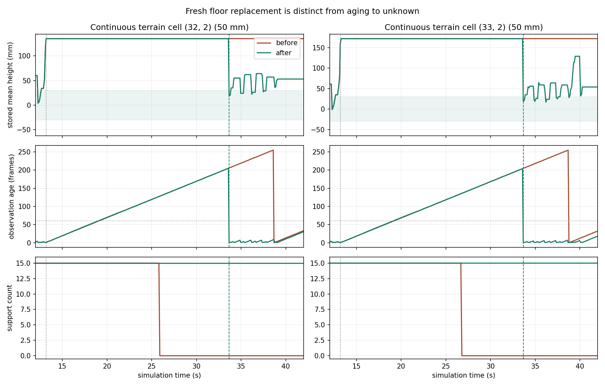

相同初始运行在 13.186 秒生成同样的两格假障碍。修复后，实际 C 足迹拒绝触发换位重扫；33.664 秒，两格旧高度被新地面观测更新，随后在 45.22 秒完成寻物。旧版 65 秒未完成。三组运行均无碰撞。没有部署实车、RK、ACTIVE 或 Flash。
这是一个有明确假设的离线压力用例通过，不是实车全部工况验收。实际日志没有保存当时被拒栅格，因此不能断言本模型就是 16:21 实测故障的唯一成因。
左：实际 locfix3 C 基线；右：主动重观测修复。2 倍播放，画面时钟为仿真时间。白框始终追踪连续地形坐标 A=(32,2)、B=(33,2)，不沿用滚动窗口旧下标。粉色只用于离线评分，不输入导航。
建议看 13–14 秒的生成与拒绝、13.51 秒开始的换位、33.664 秒的地面更新，以及 45.22 秒后的任务结果。旧版随后能离开该区域，但没有重新确认原两格是地面；不能把它离开统计区域或转为未知当作清除。
| 指标 | 旧版 | 修复版 |
|---|---|---|
| 首次两格假障碍 | 13.186 秒；A 高度 135 mm，B 高度 160 mm；13.501 秒最终运动检查命中 A | |
| A 首次非致命 | 25.807 秒：代价 253，旧高度仍 135 mm，年龄 127 | 33.664 秒：代价 5，新高度 18 mm，年龄 1、计数 15 |
| B 首次非致命 | 26.796 秒：过期为未知，旧高度 172 mm，计数 0 | 33.664 秒：代价 7，新高度 19 mm，年龄 1、计数 15 |
| 新观测发生位置 | 没有主动复核 | 两格相对窗口中心为 (6,5)、(7,5)，都在近区保留半径 12 格内 |
| 65 秒内任务 | 未完成；最接近瓶子约 0.40 m 后又离开 | 45.22 秒完成；结束距瓶子约 1.06 m |
| 碰撞 / 显式射线删除 | 0 / 0 | 0 / 0 |
修复没有使所有假障碍消失，也没有证明清除总是更快：39 秒附近仍有两格瞬态假障碍，随后分别在 0.588 / 0.877 秒后由新观测降为非致命。20.478 秒的主动复核仍偏慢；它的有效性在于重新获得地面证据、恢复任务，而不是单纯压低计数。

录像中真正起作用的是主动重观测 + 原有高程更新。保留的实验射线作废分支默认关闭，显式删除为 0；新增原始像素/条件作废 RTL 原型未用于这组通过结果，交付修复不要求更换位流。
右侧把 0.8 m 门洞用厚 0.10 m、高 0.30 m 的真实箱体封住。左侧是相同修复版的开放门洞参考，不是这堵障碍的旧版对照。修复版在封堵场景 65 秒未完成任务，也未碰撞或穿越；车轴中心最前到 x≈0.997 m，障碍近面 x=1.45 m。
此封堵场景由规划/可见性检查持续阻挡，未触发主动重观测（启动次数 0）。它验证保留障碍约束及不强行穿行，不能单独证明在所有真实障碍上启动恢复都能安全完成。八项控制入口检查通过，范围见 原始结果；从零前进速度启动恢复状态，未覆盖行驶中制动距离，并非八轮实车运动测试。
环境：D:\Anaconda\envs\mujoco\python.exe / MuJoCo 3.2.7。导航冻结自实际 fw_locfix3_20261103；原有探索、A*、局部规划、足迹检查与姿态历史查询均执行实际 C。host HAL 连接的是原始深度→边缘滤波→C 内参 LUT→变换→EMA→trav_v3 的板上参考链，不用理想障碍栅格替代导航输入。13.501 秒前两版地图数据完全一致，随后行为才分叉。
上一轮已逐位核对：240 组 BMI088 融合输出；实板感知 RTL 连续 8 帧、35,238 条滤波输出、131,072 格代价。它们是组件核对，不等于完整 CPU/总线/控制 RTL 闭环。旧版薄纸板评分曾被网格点采样漏掉，本轮已改为连续几何距离，包含整格对角线与额外 10 cm 容差；该真值仅用于评分。
| 参数 | 本轮使用 / 证据边界 |
|---|---|
| 车体 | 前后 27 cm、左右 33 cm；圆形外接安全半径 215 mm |
| XT-M60 | 160×60、10 Hz 径向深度；本机旧 SDK 云恢复内参 fx=79.944214、fy=82.731255、cx=79.881515、cy=26.922453，含五参数畸变；安装 (123,0,150) mm，偏航 3°、俯仰 2.1°、横滚 3° |
| 深度相机 | 640×480，厂家注册深度/彩色 K：fx=fy=543.467407、cx=316.355194、cy=242.648560；采用 11-03 标定外参 xyz=(-0.080694,-0.021109,0.293637)m，pitch/yaw/roll=(-1.763606,2.559597,0.629786)°；5 Hz 代理检测器，非实际 YOLO 推理 |
| IMU / 时序 | BMI088 真实运动加速度/角速度→实板整数融合→0x5B/0x5C 量化和 UART 时序；没有直接喂真实姿态。BMI 物理杠杆臂尚未量测 |
| 运动与指令 | 1.5 N、0.8 Hz 纵向扰动为声明的敏感性参数；复用实测 15–55 秒的 100 Hz 零速片段，双轴为零约 29.3%。这是命令电平门控，不是已测串口丢包 |
| ToF 运动误差 | 四相关采样桶按相邻 6.4 ms 的物理位姿生成，12 MHz，相位混合后加 12 mm 径向噪声；没有直接写假障碍。6.4 ms / 采样顺序是压力模型假设，并非已确认 XT-M60 私有 HDR 算法或实测误差幅度 |
| 地形门限 | 两版相同：step=100、rough=150、rise=200 mm，EMA shift=3，cnt=4，age=60，keep=12，膨胀半径=4 格；没有为通过而放宽门限 |
场景是扩展模拟走廊，含三角支撑（等腰边约 30 cm、底边约 45 cm）；不是对当前房间的新测绘。动力模型仍是 original4500 训练执行器近似、质量约 2.17 kg，不是已辨识实车电机/固定点平衡控制全链。材料多径、反射率和实际曝光时序未标定，因此不能据此保证实车不再出现假障碍。
相位混合建模参考 Microsoft Research 的 AMCW ToF 研究；该论文不提供 XT-M60 的器件误差模型。
完整冻结 C 源码 · 相对实际板上源码的差异 · 路径与变更清单 · 逐项结果 · 编译与门限配置 · RV32 构建记录
RV32 链接成功：text=54,442 B、BSS=70,348 B，原有 6,144 B 栈保留，静态 RAM 余量仅约 132 B。为容纳修复，compact telemetry 只省略 scan/look/tmax 的详细诊断行并增加 obs 行，不改变算法。完整间接调用栈界尚未闭合；当前脚本仅检查到直接调用路径 1,392 B，不能写成完整栈证明。未执行板上时限/负载验收，尚不作为实车发布批准。
最后一次整理只共用完全相同的格中心换算和精简控制台输出。交付源码重新运行 65 秒后，与录像所用版本的全部地图数组、物理 qpos 逐项完全一致（不是哈希校验）。
项目入口：nav/sim/closed_loop/prepare_motion_repair.py、motion_sensor_baseline.py、check_motion_repair_controls.py、motion_repair_video.py、motion_repair_report.py。原始 650 帧深度、100 Hz 输入、每次融合的高度/年龄/代价保存在 source_manifest 指向的目录；此页保留小型结果 JSON。
先前失败迭代没有作为通过依据：只加时间补偿/射线删除没有完成清障；400 mm 观察位移、20 秒时限曾因转向来不及而超时。最终采用 250 mm / 35 秒，实际通过结果如上。没有重跑六场景大矩阵或 SHA 校验。